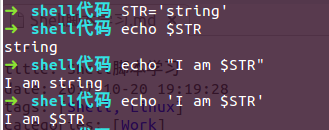

此篇为Shell脚本的学习笔记，方便用到的时候查阅。
shell中的命令不一定要用绝对路径，比如 /bin/pwd 和 pwd 均可
Linux在以下几个目录下存放命令： /bin、/sbin、/usr/bin、/usr/sbin
这几个目录的区别如下：
- /bin 是系统的一些指令。bin为binary的简写主要放置一些系统的必备执行档例如:cat、cp、chmod df、dmesg、gzip、kill、ls、mkdir、more、mount、rm、su、tar等。
- /sbin 一般是指超级用户指令。主要放置一些系统管理的必备程式例如:cfdisk、dhcpcd、dump、e2fsck、fdisk、halt、ifconfig、ifup、 ifdown、init、insmod、lilo、lsmod、mke2fs、modprobe、quotacheck、reboot、rmmod、 runlevel、shutdown等。
- /usr/bin 是你在后期安装的一些软件的运行脚本。主要放置一些应用软体工具的必备执行档例如c++、g++、gcc、chdrv、diff、dig、du、eject、elm、free、gnome、 gzip、htpasswd、kfm、ktop、last、less、locale、m4、make、man、mcopy、ncftp、 newaliases、nslookup passwd、quota、smb、wget等。
- /usr/sbin 放置一些用户安装的系统管理的必备程式例如:dhcpd、httpd、imap、in.*d、inetd、lpd、named、netconfig、nmbd、samba、sendmail、squid、swap、tcpd、tcpdump等。
如果新装的系统，运行一些很正常的诸如：shutdown，fdisk的命令时，悍然提示：bash:command not found。那么首先就要考虑root 的$PATH里是否已经包含了这些环境变量。
可以查看PATH，如果是：PATH=$PATH:$HOME/bin则需要添加成如下：PATH=$PATH:$HOME/bin:/sbin:/usr/bin:/usr/sbin
vim下的字符串替换：
%s/old/new 把每一行中的第一个old替换成new
%s/old/new/g 把每一行中的所有old替换成new
如果在要被替换的字符串中出现分隔符/，那么可以用加号+代替/ 比如：%s+/test/file1.info+/test/file1.java/g 就是把每一行中的所有/test/file1.info替换成/test/file1.java
Shell中有两类变量：临时变量和永久变量
临时变量是Shell程序内部定义的，适用范围仅限于定义它的程序，包括用户自定义变量、位置变量。
永久变量是环境变量，使用范围为Linux系统。
set命令输出系统中的所有环境变量，unset命令删除指定的变量
Shell中的特殊变量：
- $* 这个程序中的所有参数
- $# 这个程序的参数个数
- $$ 这个程序的PID
- $! 执行上一个后台命令的PID
- $? 执行上一个命令的返回值
- $(0-9) 显示位置变量
Shell中双引号和单引号的区别：
shell会把双引号里的变量值打印出来，而单引号不会去翻译变量，直接所见即所得。

命令替换符号``
``不是单引号，在键盘中的数字1之前
输出TODAY IS 20171020
``里面是命令执行的结果
test条件控制语句
- test -d file 指定文件是否是目录
test -f file 指定文件是否是常规文件
test -x file 文件是否可执行
test -r file 文件是否可读
test -w file 文件是否可写
test -a file 文件是否存在
test -s file 文件大小是否非0
test条件控制语句可以简写为[]的形式
比如：if test -d file.txt等价于if [ -d file.txt ]
注意空格：if’空格’[‘空格’-d file.txt’空格’]
Shell中用-a表示逻辑与，用-o表示逻辑或
|
|
sh -x表示以debug的方式执行脚本，方便debug
-x xtrace Write each command to standard error (preceded by a ‘+ ’) before it is executed. Useful for debugging.
Shell脚本的流程控制
参见另一篇博文：Shell脚本流程控制